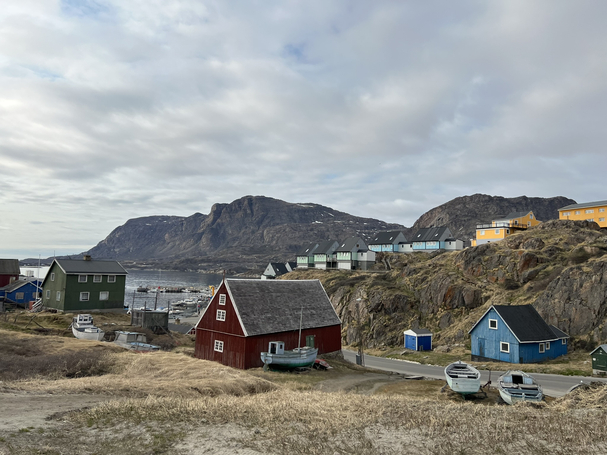

About
I am an epidemiologist whose research focuses on how public policy (including poverty reduction and public health interventions) as well as social and environmental factors shape food security, nutrition, and health in Arctic communities.
In my research, I use mixed methods and enjoy longstanding, lockstep partnerships with communities and multisectoral stakeholders.
I earned my PhD from the Yale School of Public Health, my Master's in Public Health from Dartmouth College, and my Bachelor of Science in Biology (with a minor in Political Science) from the Massachusetts Institute of Technology. Recently, I was a 2024-2026 Fulbright Arctic Initiative Scholar.
Current appointments
Postdoctoral Research Fellow
Harvard Kennedy School
Arctic Initiative
Affiliate
Harvard T.H. Chan School of Public Health
Departments of Nutrition and Environmental Health
